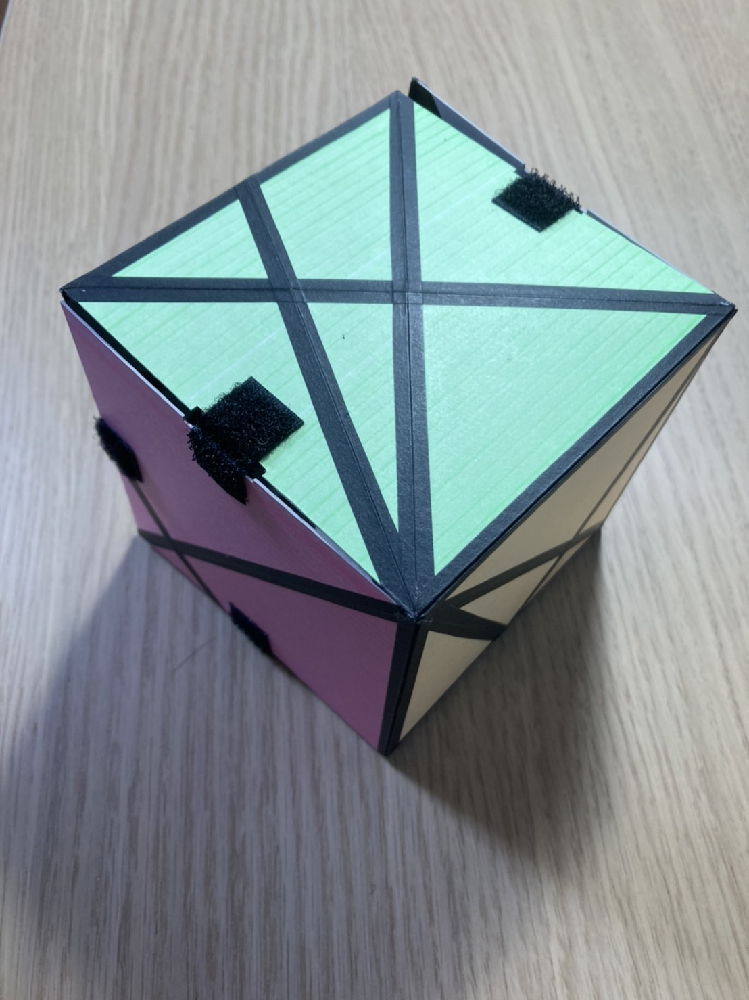

折り目をうまく選択することにより，ラテンクロスの自然な14本の辺に対する辺々接着により生成可能な凸多面体を 全て実現することができるパズルです．
アレクサンドロフの定理より発想を得たので，アレクサンドロフパズルとしています．
製品化ができたらいいなと思っていたりします．
資料
説明文をクリックでそれぞれ資料が閲覧できます．
| アレクサンドロフの定理 | ー |
|---|---|
| ラテンクロスから凸多面体の再生成 | パズルについての資料(日本語版) |
| ラテンクロスから凸多面体の再生成 | 上の資料を発表用にスライドでまとめたもの．(日本語版) |
| パズルの作り方 | パズルの作り方の手順．(日本語版)(English) |
| プログラムコード |